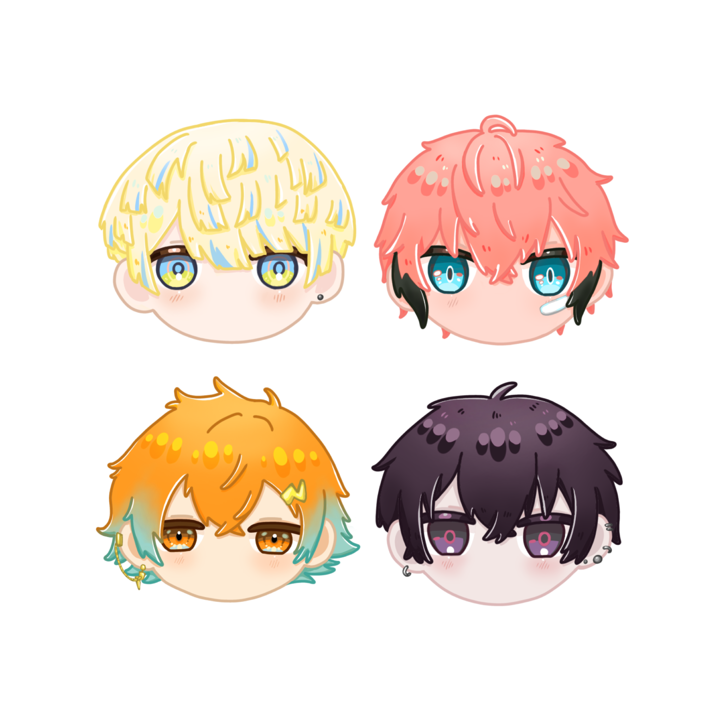
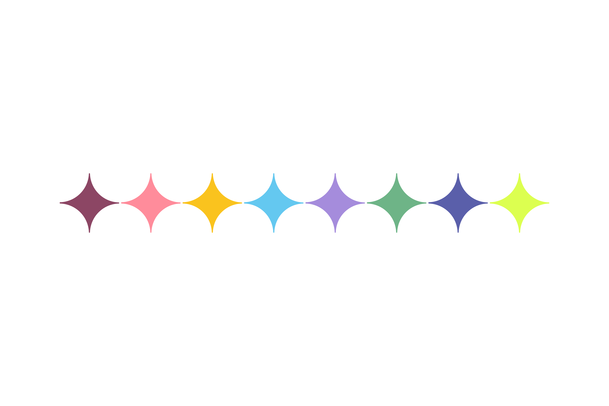
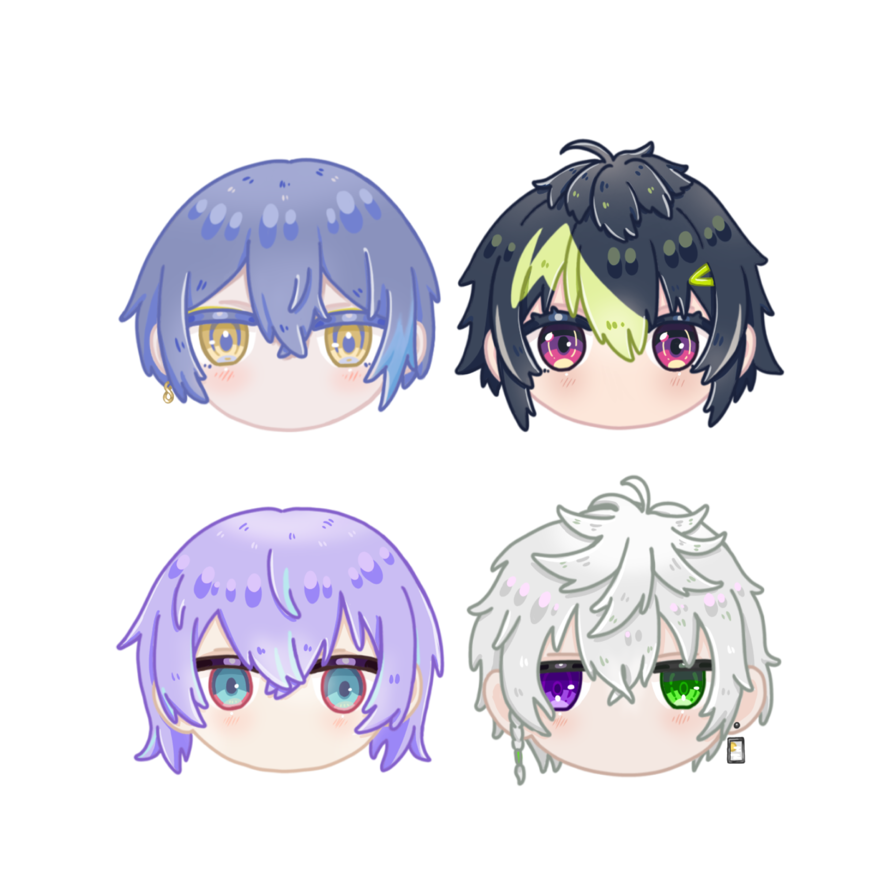

Oriens
在某座島國東側，隨著近代都市的不斷擴張與科技發展，英雄通過變身裝置來對抗敵人，守護東側四位英雄如閃電般疾馳而過！
性格耿直純粹的黑豹——“佐伯イッテツ”
充滿好奇心的劍龍－“赤城ウェン”
擁有強勁臂力的麒麟——“宇佐美リト”
神速的蜜蜂—“緋八マナ”
他們是齊心協力、對抗強大敵人的英雄組合——Oriens！

所属「にじさんじ」的8位男性VTuber組成的英雄組合。
在某個被巨大山脈分為東、西側的島國上，有秘密結社每天都以無聊的惡作劇來收集「失望點數」。
為了對付它們，東側與西側的英雄團隊因此組成。

在某座島國東側，隨著近代都市的不斷擴張與科技發展，英雄通過變身裝置來對抗敵人，守護東側四位英雄如閃電般疾馳而過！
性格耿直純粹的黑豹——“佐伯イッテツ”
充滿好奇心的劍龍－“赤城ウェン”
擁有強勁臂力的麒麟——“宇佐美リト”
神速的蜜蜂—“緋八マナ”
他們是齊心協力、對抗強大敵人的英雄組合——Oriens！
在某座島國西側，各個部落形成在鬱鬱蔥蔥的森林深處，英雄通過個人能力對抗敵人，為了調查真相四位英雄正暗中活躍！
擁有不可思議能力的鑑定師－“星導ショウ”
神出鬼沒的天才忍者—“叢雲カゲツ”
冷酷無情的白狼劍士－“小柳ロウ”
聰慧睿智的機械師－“伊波ライ”
他們集智慧與技術於一身，消滅邪惡勢力的英雄組合——Dytica！
